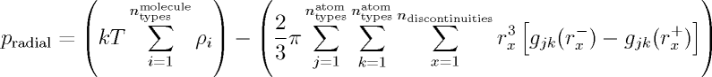

|
|
Pressure Definitions
- Pressure is computed using several different methods in Towhee and this section contains a brief description of these methods.
- Ideal Pressure
This method of computing the pressure takes the total number density of molecules in a box and then converts that into
a pressure using the ideal gas law (pV = nRT). This works fairly well for vapors, but is very poor for condensed phases.
This is computed mostly as a reference point as quantities such as the compressibility are expressed as a ratio of the true
pressure to the ideal pressure. However, it is useful for systems such as polyatomic molecules with discontinuous potentials
where none of the other methods are correct either. This is computed at the end of the simulation by transforming the average
total number density into a pressure using the ideal gas law.
- Radial Pressure
This method of computing the pressure uses an estimate of the radial distribution function at the locations just below
and just above a discontinuity in the intermolecular potential and combines that with the molecule density to compute what I
call the Radial Pressure. It is based upon the standard method of computing the pressure for discontinous systems,
as described in section 6.5.3 of Allen and Tildesley
with some modifications so it works on the fly instead of as a post-processing step. Only a small portion of the radial
distribution function is used to compute the pressure for discontinous potentials, and those are immediately adjacent to the discontinuity.

This equation is a generalization of equation 7b in Smith et al. 1977.
The Towhee implementation computes the intermolecular radial distribution function only for
bins adjacent to the discontinuities, where the bin width is set by radial_pressure_delta in towhee_input. This
method is exact in the limit where radial_pressure_delta approaches zero, but in practice that limit results in
very poor statistics as it gets progressively less likely to observe atoms in a bin of a certain distance when the width
of that bin goes to zero. It also works exactly for polyatomic molecules that are hard spheres of zero radius (what I
call an ideal chain). I am unsure whether this implementation is correct for polyatomic molecules that are not just hard
points and the developers welcome feedback from anyone who has a better understanding of the proper formulation of the pressure
for hard sphere or square well molecules.
- Thermodynamic Pressure
This method of computing the pressure uses the average change in energy per trial change in volume as an estimate of the
thermodynamic quantity dU/dV and then combines that with the number density in order to get a pressure. It is implemented
as described in Hummer et al. 1998
with the exception that any attempted move that would result in an infinite energy (occurs frequently for discontinous potentials like Hard Spheres
or Square Wells, and also infrequently for continous potentials with sufficiently large volume attempts depending upon the value of
rmin). The dU/dV term is averaged after every attempted volume change move (without regard to whether the move
was accepted) and then combined with the average number density to compute the thermodynamic pressure.
- Virial Pressure
The molecular virial, described in detail in chapter 2 of Allen and Tildesley
is used to compute the pressure from the intermolecular pair forces in the system. This is the default method of computing
the pressure in most Monte Carlo simulations and works well so long as the intermolecular pair forces are continuous and
relatively easy to derive. It does not work for step potentials (such as Hard Sphere or Square Well) and is also not
implemented for potentials that have an intermolecular angle terms (such as Stillinger-Weber). This method computes the
pressure for individual snapshots of the system with a frequency controlled by the pressurefreq variable.
Return to the Towhee algorithm page
|